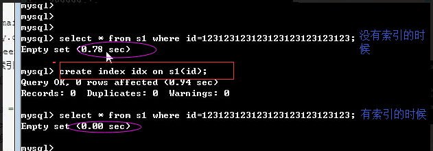
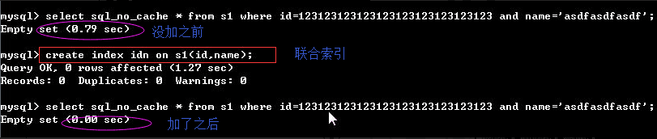

MySQL索引原理以及查询优化
1、介绍
1.1、什么是索引？
一般的应用系统，读写比例在10:1左右，而且插入操作和一般的更新操作很少出现性能问题，在生产环境中，我们遇到最多的，也是最容易出问题的，还是一些复杂的查询操作，因此对查询语句的优化显然是重中之重。说起加速查询，就不得不提到索引了。
1.2、为什么要有索引呢？
索引在MySQL中也叫做“键”，是存储引擎用于快速找到记录的一种数据结构。索引对于良好的性能 非常关键，尤其是当表中的数据量越来越大时，索引对于性能的影响愈发重要。 索引优化应该是对查询性能优化最有效的手段了。索引能够轻易将查询性能提高好几个数量级。 索引相当于字典的音序表，如果要查某个字，如果不使用音序表，则需要从几百页中逐页去查。
2、索引的原理
2.1、 索引原理
索引的目的在于提高查询效率，与我们查阅图书所用的目录是一个道理：先定位到章，然后定位到该章下的一个小节，然后找到页数。相似的例子还有：查字典，查火车车次，飞机航班等
本质都是：通过不断地缩小想要获取数据的范围来筛选出最终想要的结果，同时把随机的事件变成顺序的事件，也就是说，有了这种索引机制，我们可以总是用同一种查找方式来锁定数据。
数据库也是一样，但显然要复杂的多，因为不仅面临着等值查询，还有范围查询(>、<、between、in)、模糊查询(like)、并集查询(or)等等。数据库应该选择怎么样的方式来应对所有的问题呢？我们回想字典的例子，能不能把数据分成段，然后分段查询呢？最简单的如果1000条数据，1到100分成第一段，101到200分成第二段，201到300分成第三段......这样查第250条数据，只要找第三段就可以了，一下子去除了90%的无效数据。但如果是1千万的记录呢，分成几段比较好？稍有算法基础的同学会想到搜索树，其平均复杂度是lgN，具有不错的查询性能。但这里我们忽略了一个关键的问题，复杂度模型是基于每次相同的操作成本来考虑的。而数据库实现比较复杂，一方面数据是保存在磁盘上的，另外一方面为了提高性能，每次又可以把部分数据读入内存来计算，因为我们知道访问磁盘的成本大概是访问内存的十万倍左右，所以简单的搜索树难以满足复杂的应用场景。
2.2、磁盘IO与预读
考虑到磁盘IO是非常高昂的操作，计算机操作系统做了一些优化，当一次IO时，不光把当前磁盘地址的数据，而是把相邻的数据也都读取到内存缓冲区内，因为局部预读性原理告诉我们，当计算机访问一个地址的数据的时候，与其相邻的数据也会很快被访问到。每一次IO读取的数据我们称之为一页(page)。具体一页有多大数据跟操作系统有关，一般为4k或8k，也就是我们读取一页内的数据时候，实际上才发生了一次IO，这个理论对于索引的数据结构设计非常有帮助。
2.3、索引的数据结构
任何一种数据结构都不是凭空产生的，一定会有它的背景和使用场景，我们现在总结一下，我们需要这种数据结构能够做些什么，其实很简单，那就是：每次查找数据时把磁盘IO次数控制在一个很小的数量级，最好是常数数量级。那么我们就想到如果一个高度可控的多路搜索树是否能满足需求呢？就这样，b+树应运而生。

如上图，是一颗b+树，关于b+树的定义可以参见B+树，这里只说一些重点，浅蓝色的块我们称之为一个磁盘块，可以看到每个磁盘块包含几个数据项（深蓝色所示）和指针（黄色所示），如磁盘块1包含数据项17和35，包含指针P1、P2、P3，P1表示小于17的磁盘块，P2表示在17和35之间的磁盘块，P3表示大于35的磁盘块。真实的数据存在于叶子节点即3、5、9、10、13、15、28、29、36、60、75、79、90、99。非叶子节点只不存储真实的数据，只存储指引搜索方向的数据项，如17、35并不真实存在于数据表中。
2.3.1、b+树的查找过程
如图所示，如果要查找数据项29，那么首先会把磁盘块1由磁盘加载到内存，此时发生一次IO，在内存中用二分查找确定29在17和35之间，锁定磁盘块1的P2指针，内存时间因为非常短（相比磁盘的IO）可以忽略不计，通过磁盘块1的P2指针的磁盘地址把磁盘块3由磁盘加载到内存，发生第二次IO，29在26和30之间，锁定磁盘块3的P2指针，通过指针加载磁盘块8到内存，发生第三次IO，同时内存中做二分查找找到29，结束查询，总计三次IO。真实的情况是，3层的b+树可以表示上百万的数据，如果上百万的数据查找只需要三次IO，性能提高将是巨大的，如果没有索引，每个数据项都要发生一次IO，那么总共需要百万次的IO，显然成本非常非常高。
2.3.2、b+树性质
- 索引字段要尽量的小：通过上面的分析，我们知道IO次数取决于b+数的高度h，假设当前数据表的数据为N，每个磁盘块的数据项的数量是m，则有h=㏒(m+1)N，当数据量N一定的情况下，m越大，h越小；而m = 磁盘块的大小 / 数据项的大小，磁盘块的大小也就是一个数据页的大小，是固定的，如果数据项占的空间越小，数据项的数量越多，树的高度越低。这就是为什么每个数据项，即索引字段要尽量的小，比如int占4字节，要比bigint8字节少一半。这也是为什么b+树要求把真实的数据放到叶子节点而不是内层节点，一旦放到内层节点，磁盘块的数据项会大幅度下降，导致树增高。当数据项等于1时将会退化成线性表。
- 索引的最左匹配特性（即从左往右匹配）：当b+树的数据项是复合的数据结构，比如(name,age,sex)的时候，b+数是按照从左到右的顺序来建立搜索树的，比如当(张三,20,F)这样的数据来检索的时候，b+树会优先比较name来确定下一步的所搜方向，如果name相同再依次比较age和sex，最后得到检索的数据；但当(20,F)这样的没有name的数据来的时候，b+树就不知道下一步该查哪个节点，因为建立搜索树的时候name就是第一个比较因子，必须要先根据name来搜索才能知道下一步去哪里查询。比如当(张三,F)这样的数据来检索时，b+树可以用name来指定搜索方向，但下一个字段age的缺失，所以只能把名字等于张三的数据都找到，然后再匹配性别是F的数据了， 这个是非常重要的性质，即索引的最左匹配特性。
3、Mysql索引管理
3.1、功能
- 索引的功能就是加速查找
- mysql中的primary key，unique，联合唯一也都是索引，这些索引除了加速查找以外，还有约束的功能 二、MySQL的索引分类
3.2、索引分类
- 普通索引index :加速查找
- 唯一索引
- 主键索引：primary key ：加速查找+约束（不为空且唯一）
- 唯一索引：unique：加速查找+约束 （唯一）
- 联合索引
- -primary key(id,name):联合主键索引
- -unique(id,name):联合唯一索引
- -index(id,name):联合普通索引
- 全文索引fulltext :用于搜索很长一篇文章的时候，效果最好。
- 空间索引spatial :了解就好，几乎不用
举个例子来说，比如你在为某商场做一个会员卡的系统。 这个系统有一个会员表，有下列字段：
- 会员编号 INT
- 会员姓名 VARCHAR(10)
- 会员身份证号码 VARCHAR(18)
- 会员电话 VARCHAR(10)
- 会员住址 VARCHAR(50)
- 会员备注信息 TEXT
那么这个 会员编号，作为主键，使用 PRIMARY，
会员姓名 如果要建索引的话，那么就是普通的 INDEX，
会员身份证号码 如果要建索引的话，那么可以选择 UNIQUE （唯一的，不允许重复），
除此之外还有全文索引，即FULLTEXT，
会员备注信息，如果需要建索引的话，可以选择全文搜索。
用于搜索很长一篇文章的时候，效果最好。
用在比较短的文本，如果就一两行字的，普通的 INDEX 也可以。
但其实对于全文搜索，我们并不会使用MySQL自带的该索引，而是会选择第三方软件如Sphinx，专门来做全文搜索。
其他的如空间索引SPATIAL，了解即可，几乎不用。
3.3、 索引的两大类型hash与btree
3.3.1、我们可以在创建上述索引的时候，为其指定索引类型，分两类
- hash类型的索引：查询单条快，范围查询慢
- btree类型的索引：b+树，层数越多，数据量指数级增长（我们就用它，因为innodb默认支持它）
3.3.2、不同的存储引擎支持的索引类型也不一样**
- InnoDB 支持事务，支持行级别锁定，支持 B-tree、Full-text 等索引，不支持 Hash 索引；
- MyISAM 不支持事务，支持表级别锁定，支持 B-tree、Full-text 等索引，不支持 Hash 索引；
- Memory 不支持事务，支持表级别锁定，支持 B-tree、Hash 等索引，不支持 Full-text 索引；
- NDB 支持事务，支持行级别锁定，支持 Hash 索引，不支持 B-tree、Full-text 等索引；
- Archive 不支持事务，支持表级别锁定，不支持 B-tree、Hash、Full-text 等索引；
3.4、创建/删除索引的语法
3.4.1、方法一：创建表时
CREATE TABLE 表名 (
字段名1 数据类型 [完整性约束条件…],
字段名2 数据类型 [完整性约束条件…],
[UNIQUE | FULLTEXT | SPATIAL ] INDEX | KEY
[索引名] (字段名[(长度)] [ASC |DESC])
);
3.4.2、方法二：CREATE在已存在的表上创建索引
CREATE [UNIQUE | FULLTEXT | SPATIAL ] INDEX 索引名
ON 表名 (字段名[(长度)] [ASC |DESC]) ;
3.4.3、方法三：ALTER TABLE在已存在的表上创建索引
ALTER TABLE 表名 ADD [UNIQUE | FULLTEXT | SPATIAL ] INDEX
索引名 (字段名[(长度)] [ASC |DESC]) ;
3.4.4、删除索引：
DROP INDEX 索引名 ON 表名字;
3.5、善用帮助文档
- help create
- help create index
3.5.1、创建索引
- 在创建表时就创建（需要注意的几点）：
create table s1(
id int ,#可以在这加primary key
#id int index #不可以这样加索引，因为index只是索引，没有约束一说，
#不能像主键，还有唯一约束一样，在定义字段的时候加索引
name char(20),
age int,
email varchar(30)
#primary key(id) #也可以在这加
index(id) #可以这样加
);
- 在创建表后在创建
create index name on s1(name); #添加普通索引
create unique age on s1(age);添加唯一索引
alter table s1 add primary key(id); #添加住建索引，也就是给id字段增加一个主键约束
create index name on s1(id,name); #添加普通联合索引
3.5.2、删除索引
drop index id on s1;
drop index name on s1; #删除普通索引
drop index age on s1; #删除唯一索引，就和普通索引一样，不用在index前加unique来删，直接就可以删了
alter table s1 drop primary key; #删除主键(因为它添加的时候是按照alter来增加的，那么我们也用alter来删)
3.6、测试索引
3.6.1、准备
- 准备表
create table s1(
id int,
name varchar(20),
gender char(6),
email varchar(50)
);
- 创建存储过程，实现批量插入记录
\[ #声明存储过程的结束符号为 \]delimiter
delimiter $$
create procedure auto_insert1()
BEGIN
declare i int default 1;
while(i<3000000)do
insert into s1 values(i,concat('egon',i),'male',concat('egon',i,'@oldboy')
);
set i=i+1;
end while;
END$$ #$$结束
delimiter ; #重新声明分号为结束符号
- 查看存储过程
show create procedure auto_insert1\G
- 调用存储过程
call auto_insert1();
3.6.2、在没有索引的前提下测试查询速度
- 无索引：从头到尾扫描一遍，所以查询速度很慢
mysql> select * from s1 where id=333;
+------+---------+--------+----------------+
| id | name | gender | email |
+------+---------+--------+----------------+
| 333 | egon333 | male | 333@oldboy.com |
| 333 | egon333 | f | alex333@oldboy |
| 333 | egon333 | f | alex333@oldboy |
+------+---------+--------+----------------+
rows in set (0.32 sec)
mysql> select * from s1 where email='egon333@oldboy';
....
... rows in set (0.36 sec)
- 加上索引
- 一定是为搜索条件的字段创建索引，比如select * from t1 where age > 5;就需要为age加上索引
- 在表中已经有大量数据的情况下，建索引会很慢，且占用硬盘空间，插入删除更新都很慢，只有查询快 比如create index idx on s1(id);会扫描表中所有的数据，然后以id为数据项，创建索引结构，存放于硬盘的表中。 建完以后，再查询就会很快了
- 需要注意的是：innodb表的索引会存放于s1.ibd文件中，而myisam表的索引则会有单独的索引文件table1.MYI 
3.7、正确使用索引
3.7.1、覆盖索引
select * from s1 where id=123;
该sql命中了索引，但未覆盖索引。
利用id=123到索引的数据结构中定位到该id在硬盘中的位置，或者说再数据表中的位置。
但是我们select的字段为*，除了id以外还需要其他字段，这就意味着，我们通过索引结构取到id还不够，还需要利用该id再去找到该id所在行的其他字段值，这是需要时间的，很明显，如果我们只select id，
就减去了这份苦恼，如下
select id from s1 where id=123;
这条就是覆盖索引了，命中索引，且从索引的数据结构直接就取到了id在硬盘的地址，速度很快
3.7.2、联合索引

3.7.3、索引合并
索引合并： 把多个单列索引合并使用
分析： 组合索引能做到的事情，我们都可以用索引合并去解决，比如
create index ne on s1(name,email);#组合索引
我们完全可以单独为name和email创建索引
组合索引可以命中：
select * from s1 where name='egon' ;
select * from s1 where name='egon' and email='adf';
索引合并可以命中：
select * from s1 where name='egon' ;
select * from s1 where email='adf';
select * from s1 where name='egon' and email='adf';
乍一看好像索引合并更好了：可以命中更多的情况，但其实要分情况去看，如果是name='egon' and email='adf', 那么组合索引的效率要高于索引合并，如果是单条件查，那么还是用索引合并比较合理
4、索引使用建议
4.1、联合索引
若想利用索引达到预想的提高查询速度的效果，我们在添加索引时，必须遵循以下原则
-
最左前缀匹配：必须按照从左到右的顺序匹配。mysql会一直向右匹配直到遇到范围查询(>、<、between、like)就停止匹配，比如a = 1 and b = 2 and c > 3 and d = 4 如果建立(a,b,c,d)顺序的索引，d是用不到索引的，如果建立(a,b,d,c)的索引则都可以用到，a,b,d的顺序可以任意调整。
select * from s1 where name='egon'; #可以 select * from s1 where name='egon' and email='asdf'; #可以 select * from s1 where email='alex@oldboy.com'; #不可以 -
=和in可以乱序，比如a = 1 and b = 2 and c = 3 建立(a,b,c)索引可以任意顺序，mysql的查询优化器 会帮你优化成索引可以识别的形式
-
尽量选择区分度高的列作为索引,区分度的公式是count(distinct col)/count(*)， 表示字段不重复的比例，比例越大我们扫描的记录数越少，唯一键的区分度是1，而一些状态、 性别字段可能在大数据面前区分度就是0，那可能有人会问，这个比例有什么经验值吗？使用场景不同， 这个值也很难确定，一般需要join的字段我们都要求是0.1以上，即平均1条扫描10条记录
-
索引列不能参与计算，保持列“干净”，比如
from_unixtime(create_time) = ’2014-05-29’就不能使用到索引，原因很简单，b+树中存的都是数据表中的字段值，但进行检索时，需要把所有元素都应用函数才能比较，显然成本太大。所以语句应该写成create_time = unix_timestamp(’2014-05-29’);
最左前缀示范
mysql> select * from s1 where id>3 and name='egon' and email='alex333@oldboy.com' and gender='male';
Empty set (0.39 sec)
mysql> create index idx on s1(id,name,email,gender); #未遵循最左前缀
Query OK, 0 rows affected (15.27 sec)
Records: 0 Duplicates: 0 Warnings: 0
mysql> select * from s1 where id>3 and name='egon' and email='alex333@oldboy.com' and gender='male';
Empty set (0.43 sec)
mysql> drop index idx on s1;
Query OK, 0 rows affected (0.16 sec)
Records: 0 Duplicates: 0 Warnings: 0
mysql> create index idx on s1(name,email,gender,id); #遵循最左前缀
Query OK, 0 rows affected (15.97 sec)
Records: 0 Duplicates: 0 Warnings: 0
mysql> select * from s1 where id>3 and name='egon' and email='alex333@oldboy.com' and gender='male';
Empty set (0.03 sec)
建联合索引，最左匹配 索引无法命中的情况需要注意：
- like '%xx'
select * from tb1 where email like '%cn';
- 使用函数
select * from tb1 where reverse(email) = 'wupeiqi';
- or
select * from tb1 where nid = 1 or name = 'seven@live.com';
特别的：当or条件中有未建立索引的列才失效，以下会走索引
select * from tb1 where nid = 1 or name = 'seven';
select * from tb1 where nid = 1 or name = 'seven@live.com' and email = 'alex'
- 类型不一致
如果列是字符串类型，传入条件是必须用引号引起来，不然...
select * from tb1 where email = 999;
普通索引的不等于不会走索引
- !=
select * from tb1 where email != 'alex'
特别的：如果是主键，则还是会走索引
select * from tb1 where nid != 123
- >
select * from tb1 where email > 'alex'
特别的：如果是主键或索引是整数类型，则还是会走索引
select * from tb1 where nid > 123
select * from tb1 where num > 123
#排序条件为索引，则select字段必须也是索引字段，否则无法命中
- order by
select name from s1 order by email desc;
当根据索引排序时候，select查询的字段如果不是索引，则不走索引
select email from s1 order by email desc;
特别的：如果对主键排序，则还是走索引：
select * from tb1 order by nid desc;
- 组合索引最左前缀
如果组合索引为：(name,email)
name and email -- 使用索引
name -- 使用索引
email -- 不使用索引
- count(1)或count(列)代替count(*)在mysql中没有差别了
- create index xxxx on tb(title(19)) #text类型，必须制定长度
4.2、其他
- 避免使用select *
- count(1)或count(列) 代替 count(*)
- 创建表时尽量时 char 代替 varchar
- 表的字段顺序固定长度的字段优先
- 组合索引代替多个单列索引（经常使用多个条件查询时）
- 尽量使用短索引
- 使用连接（JOIN）来代替子查询(Sub-Queries)
- 连表时注意条件类型需一致
- 索引散列值（重复少）不适合建索引，例：性别不适合
5、慢查询优化的基本步骤
- 先运行看看是否真的很慢，注意设置SQL_NO_CACHE
- where条件单表查，锁定最小返回记录表。这句话的意思是把查询语句的where都应用到表中返回的记录数最小的表开始查起，单表每个字段分别查询，看哪个字段的区分度最高
- explain查看执行计划，是否与1预期一致（从锁定记录较少的表开始查询）
- order by limit 形式的sql语句让排序的表优先查
- 了解业务方使用场景
- 加索引时参照建索引的几大原则
- 观察结果，不符合预期继续从0分析